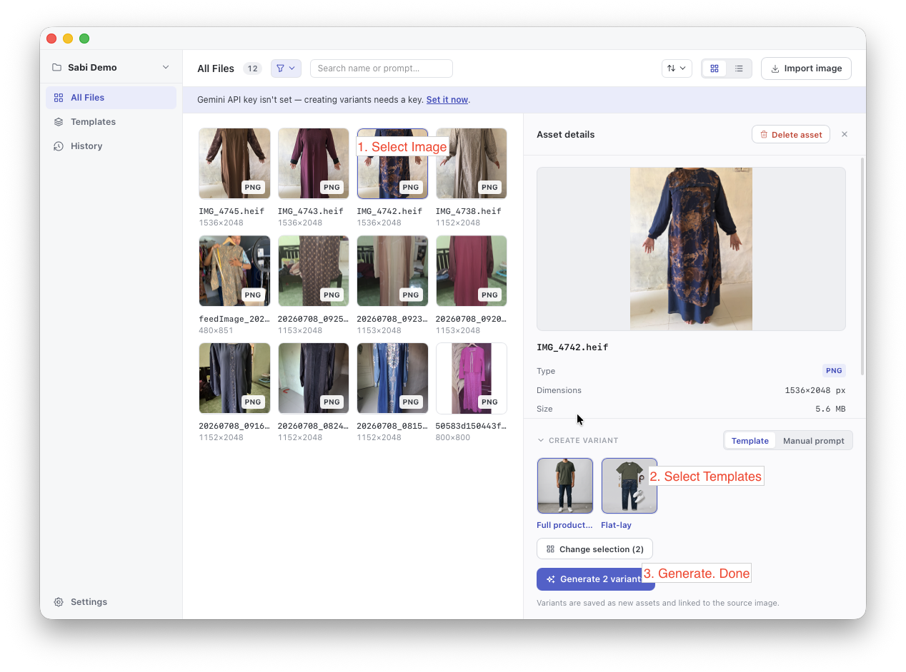

Baim
Baim stands for Batch Imagery. Edit images using Gemini AI with your own API key, in batch, without a watermark. Save time on repetitive image edits.
Download
Features
Bring your own key
Use your own Gemini API key. Your images and usage stay under your control.
Batch editing
Apply the same edit across many images at once instead of one by one.
No watermark
Export clean results with no added marks.
Templates
Save, manage, and reuse prompts as templates so you can apply the same edit again without retyping.